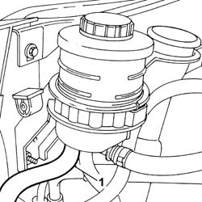
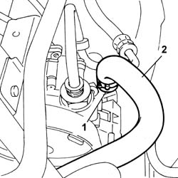

4130B34 SUPPLY PIPE FROM FLUID RESEVIOR TO POWER STEERING PUMP R R
- Path
- Procedures > 41 STEERING UNIT > 4130 POWER STEERING > 4130B POWER STEERING HYDRAULIC SYTEM > 4130B34 SUPPLY PIPE FROM FLUID RESEVIOR TO POWER STEERING PUMP R R
- Kind
- repair procedure (removal / refitting; the operation number is the code)
- Applies to
- all engines; all production periods
- Interactive page
- https://sloeber94.github.io/elrnDB-fUlss/en/#/179007362
Applies to: all engines; all production periods
 Removing
Removing
 Refitting
RefittingOp. 0010T70 POWER ASSISTED STEERING FLUID - REPLACE
1. Remove the collar and disconnect the pipe from the power steering reservoir.

Applies to: all engines; all production periods
1. Remove the retaining band.
2. Disconnect the supply pipe from the power steering pump and remove.

Applies to: all engines; all production periods
Refitting
Removing- Connect the pipe to the power steering pump and secure with a collar.
- Connect the pipe to the power steering pump and secure with a collar.